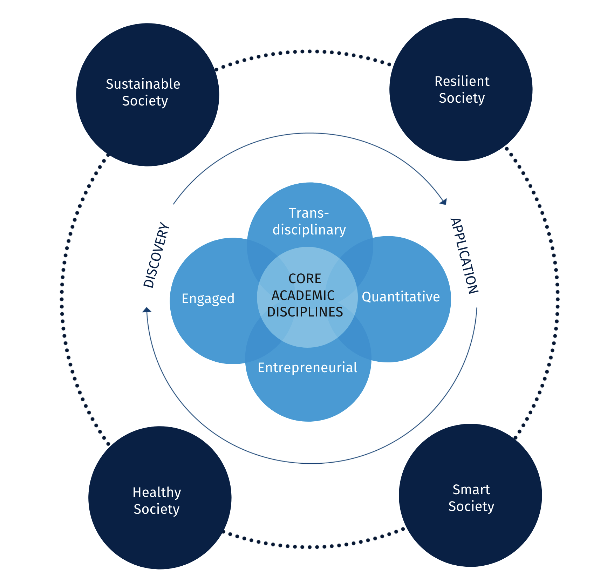
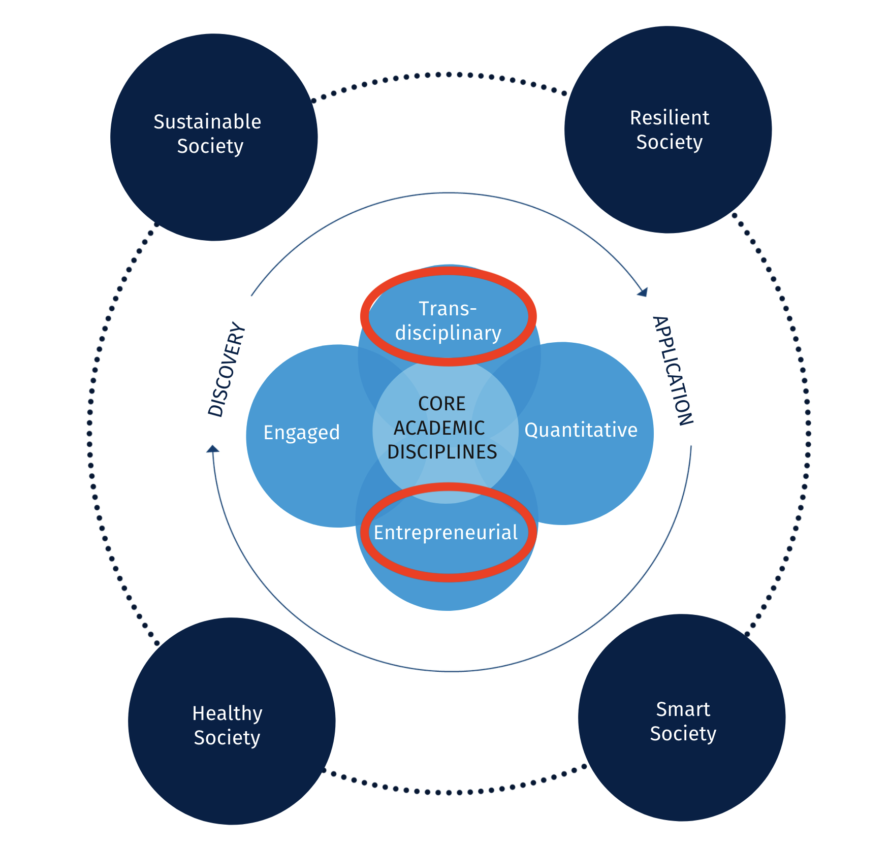
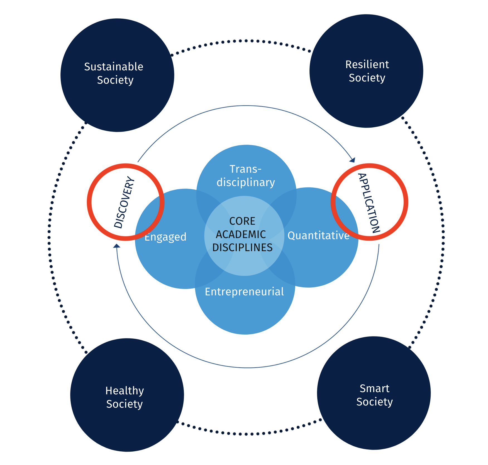
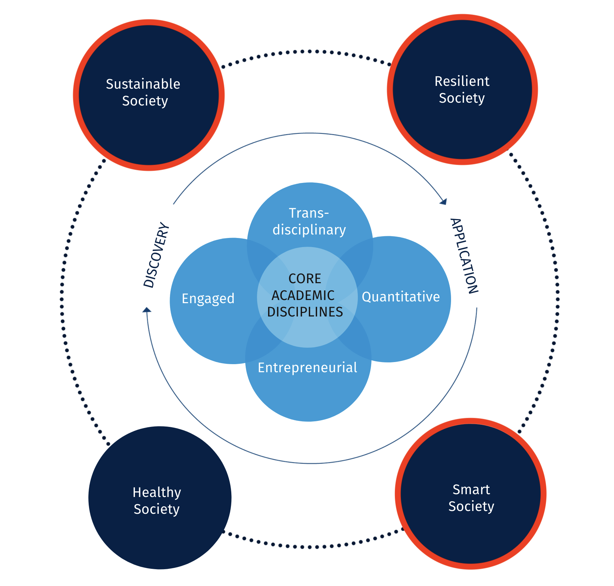

Data Compression with Relative Entorpy Coding
Gergely Flamich
04/02/2025
gergely-flamich.github.io
About me
Education
-
2014 - 2018
- Joint BSc in Maths & Computer Science
- Valedictorian in Computer Science
-
 2018 - 2019, 2020 - now
2018 - 2019, 2020 - now- MPhil, graduated with commendation
- PhD, about to finish
Experience
-
- Thesis topic: data compression
- 13 papers, 10+ collabs., top ML and IT venues
- Supervised 3 MPhil theses, 2 undergraduate research projects
-
- 2022: Invented compression algorithm
- 2024: Will work on machine translation
The Proposed Project
Adaptive Compression
🤔 Huge volume of data, new needs
💡ML revolution in data compression
🎯 REC: 🚀 faster and 🔒 private data compressors
🎯 Application: 📈 scalable, ⚡-efficient adaptive ML-based compressors: INRs
🎯 Practice: compress 🧬 scientific data, 🎥 video
Compression for adaptation
🤔 Can language models (ever) understand data?
💡"Occams razor:" algorithmic information theory
🎯 Theory: rule extrapolation and algorithmic causality.
🎯 Application: improved 🛠️ algorithm design, AI tools for scientists 👩🔬
Why Imperial?




the sponsor and host lab
- 🎯 management
- 🤝 network
- 🔬 collaboration
how the ICRF will benefit me
- Develop next-gen 🗜️ not possible in 🏭
- Enterprise Lab
- Establish independence, smooth transition to lectureship
Envisioned Outcomes
- Demonstrated practical, real-world advantage of my compression algorithms over state-of-the-art
- Established independence, research supported by successful grant applications (e.g. UKRI FLF)
- Well on my way to commercialise my work